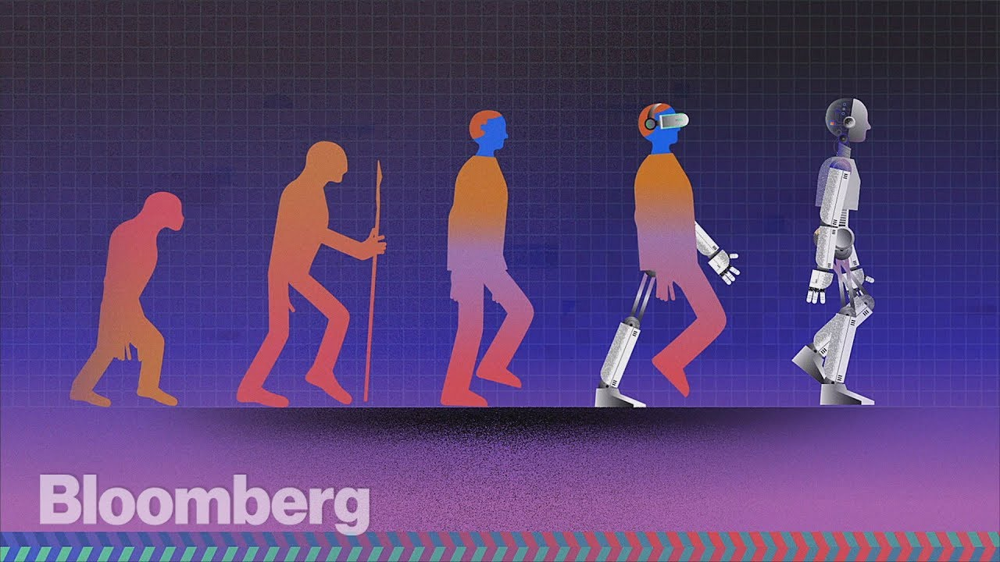
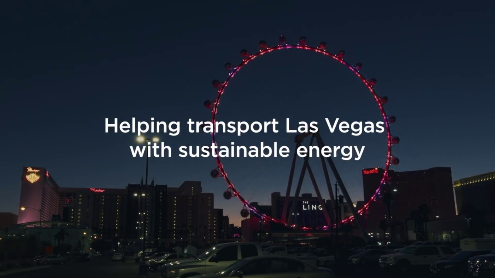
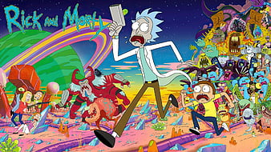
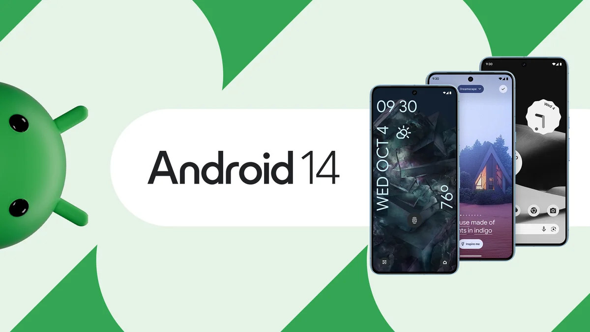

Tech videos encompass a wide range of content related to technology, catering to various interests and expertise levels within the tech community.tech videos serve diverse purposes, ranging from educating and informing viewers to entertaining and inspiring them. The tech community on platforms like YouTube continues to grow, offering endless opportunities for content creators to share their passion for technology with a global audience.Depending on the audience and context, tech industry talks can cover a diverse array of topics, reflecting the dynamic and ever-evolving nature of the technology sector
|  |
THE RISE OF AI: There is an AI revolution sweeping across the world, yet few people know where this technology came from and why it sudddenly took off This includes discussions on the latest innovations and emerging technologies shaping the industry, such as artificial intelligence (AI), machine learning, blockchain, augmented reality (AR), virtual reality (VR), quantum computing, and Internet of Things (IoT). |
|  |
V3 SUPERCHARGING IN VEGAS: Tesla's V3 Superchargers are the latest generation of their fast-charging stations for electric vehicles. These chargers are capable of delivering much higher charging speeds compared to previous generations, with peak rates of up to 250 kW per car.The deployment of V3 Superchargers in Las Vegas provides several benefits for Tesla owners. They can charge their vehicles much faster, reducing the time spent waiting for their vehicles to recharge during road trips or while visiting the city. |
|  |
THE PHILOSOPHY OF RICK AND MORTY- WISE CRACK ADDITION: "Rick and Morty" offers a rich tapestry of philosophical themes and ideas, inviting viewers to contemplate deep existential questions while simultaneously entertaining them with its irreverent humor and imaginative storytelling. The show often breaks the fourth wall and engages in metafictional commentary on storytelling and narrative conventions. This self-awareness invites philosophical reflection on the nature of fiction, reality. |
|  |
ANDRIOD 14 FIRST IMPRESSION: WHAT'S NEW? These are some of the key features and improvements that users may have noticed when first experiencing Android 14. Keep in mind that device manufacturers often customize the Android experience with their own user interfaces and additional features, so the user experience may vary depending on the device and its software skin. Android 10 included various improvements to accessibility features. |